Про себе
Всім привіт! Мене звуть Давід Лопатка. Мені 10 років. Я народився 18 серпня 2013 року. Я в 5 классі та мій улюблений урок це "Пізнаємо природу. Моя планета земля.".
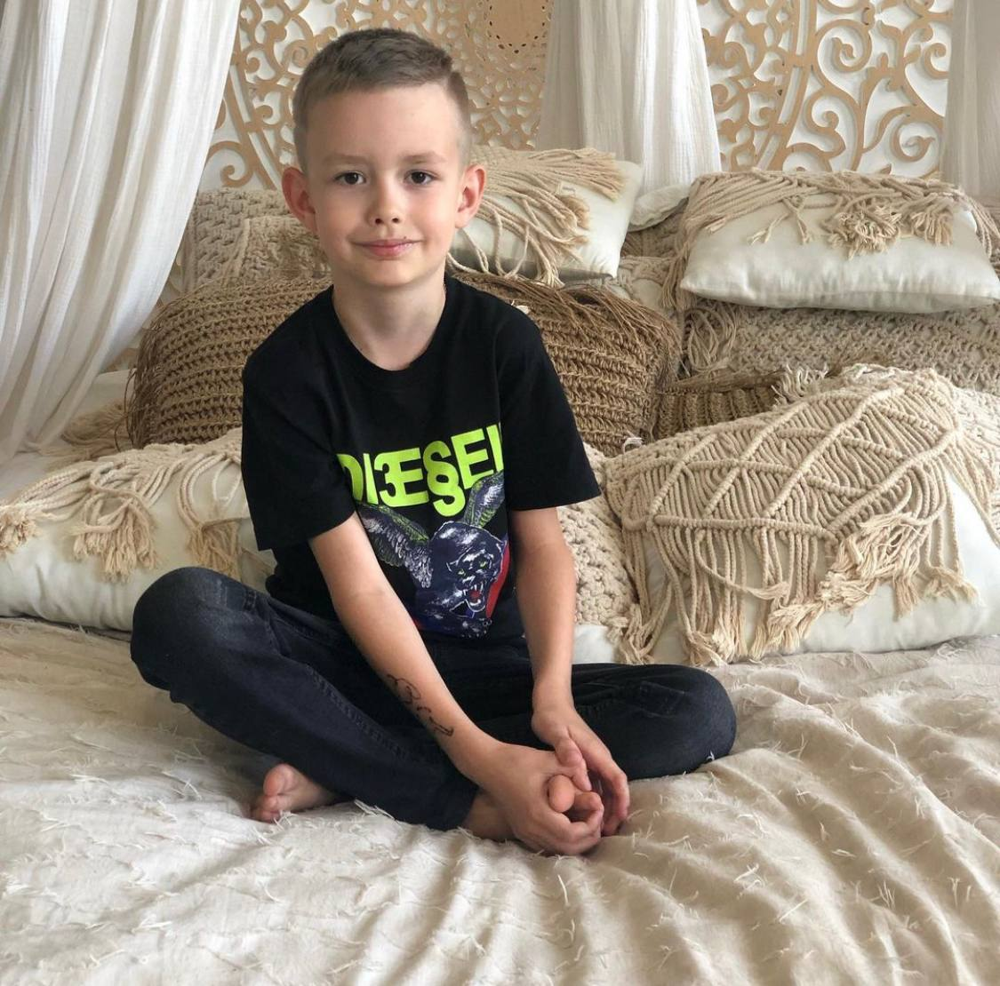 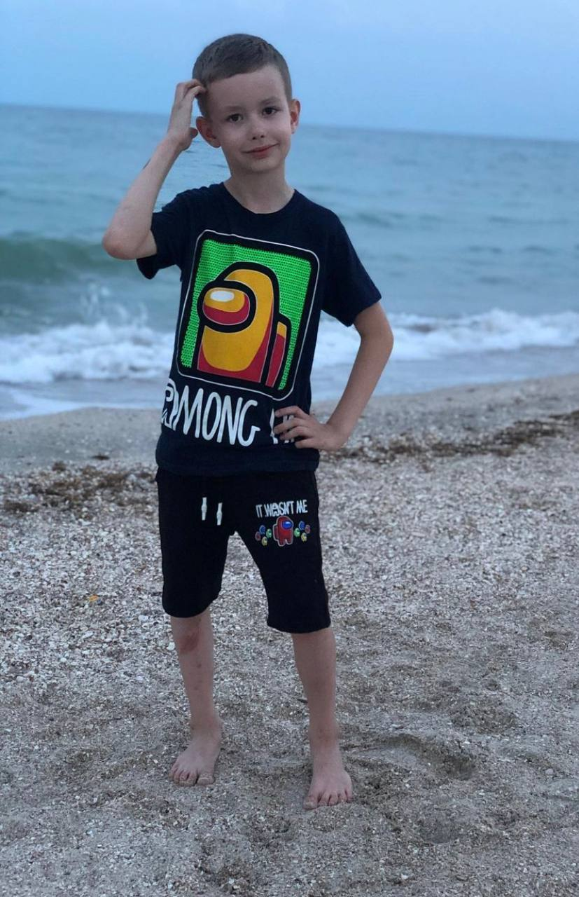 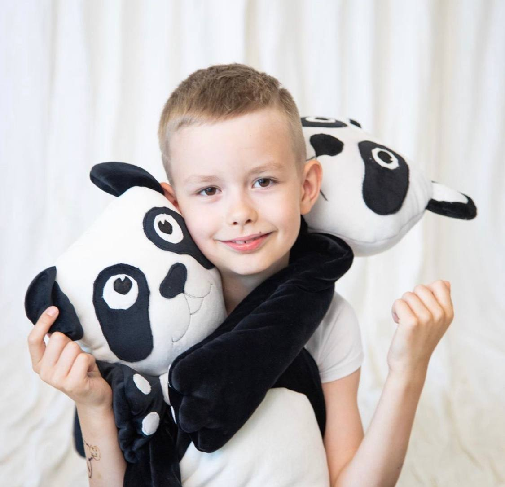
Мої домашні улюбленці
Перший мій домашній улюблинець це Мірон. Це безпородний кіт. Він народився в березні 2011 року. Він старший за мене і любить кусатися. Ще в мене є пес Тіша. Він народився 15 грудня 2017 року. Він обожнює гуляти. І останні мої улюбленці це равлики. Їх 4. Равликів звуть Максі, Патрік, Лео, Уля. Вони в мене з липня 2023 року. Вони люблять купатися.
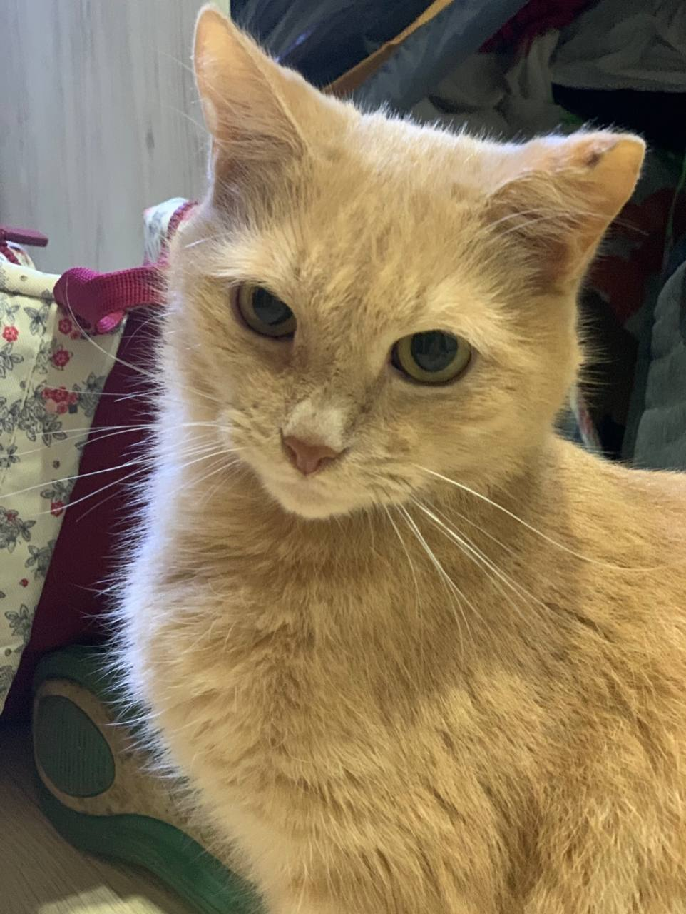 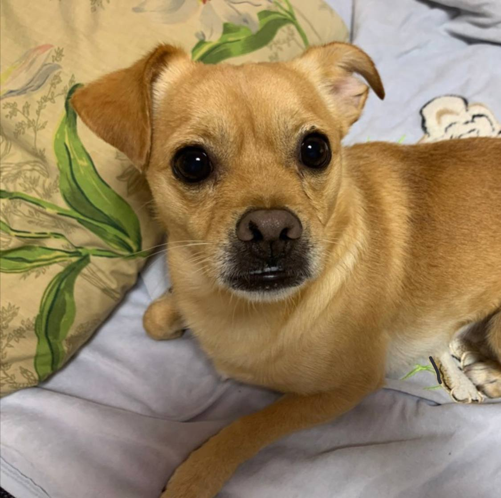 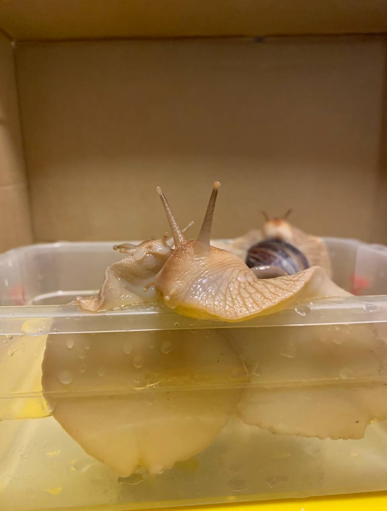
Більше про моїх домашній улюбленців ви можете дізнатися на моєму першому сайті:
Сайт про домашніх улюбленцівМоє хоббі
Моє хоббі як ви здогадалися це програмування. Я вже знаю мову програмування Scratch. Ще на половину знаю HTML, CSS, Lua в Роблоксі. У Scratch я робив багато міні-ігр та мультиків, а у Lua в Роблоксі я роблю свою першу гру. І за допомогою мов програмування HTML, CSS я зараз роблю цей сайт!
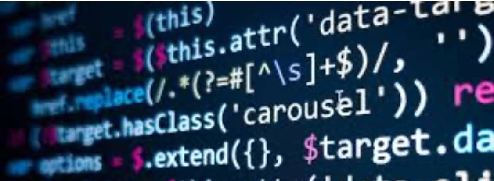 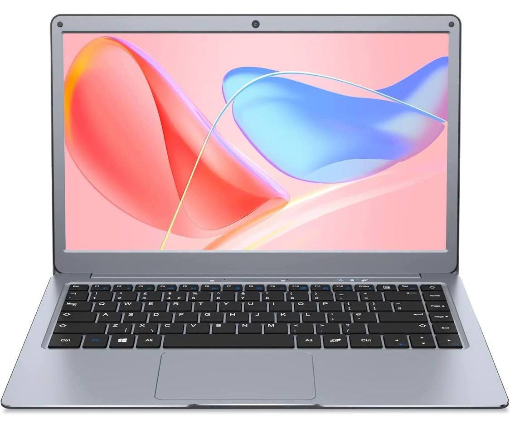 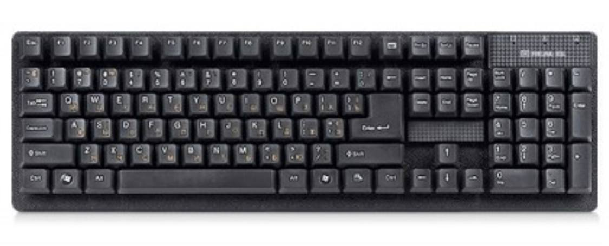Мої аккаунти у соціальних мережах
В мене є аккаунти у соціальних мережах. Перший мій аккаунт про який я вам розповім це YouTube. На 1 аккаунті в ютубі в мене там зараз 538 підписників. Туди я знімаю Roblox, танці, та смішні відео. На 2 аккаунт в ютубі я знімаю пісні та музикальні відео на них. Ще в мене є інстаграм. Там в мене 48 підписників. У інстаграмі я знімаю блог, танці та смішні відео. І остання моя соціальна мережа куди я знімаю це вайбер канал. Там в мене 6 підписників. У вайбер канал я пишу писемним повідомленням блог та скидую ссилки на всі мої нові відео.
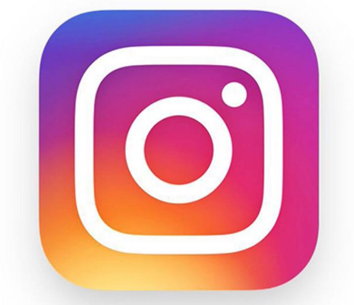Ось ссилки на мої соціальні мережи:
Мій 1 ютуб канал Мій 2 ютуб канал Мій інстаграм канал Мій вайбер каналЦікаві місця у якіх я бував
Моє найбільше досяжнення у житті - покорення Говерли. Я пам'ятаю як ми довго лізли на вершину. Було дуже сніжно. Але ми не до кінця до лізли. Останні 100 метрів ми не змогли подолать тому що була погана погода. Ще я плавал на байдарках. Ми подолали з моїми друзями та батьками 18 км. Було весело!
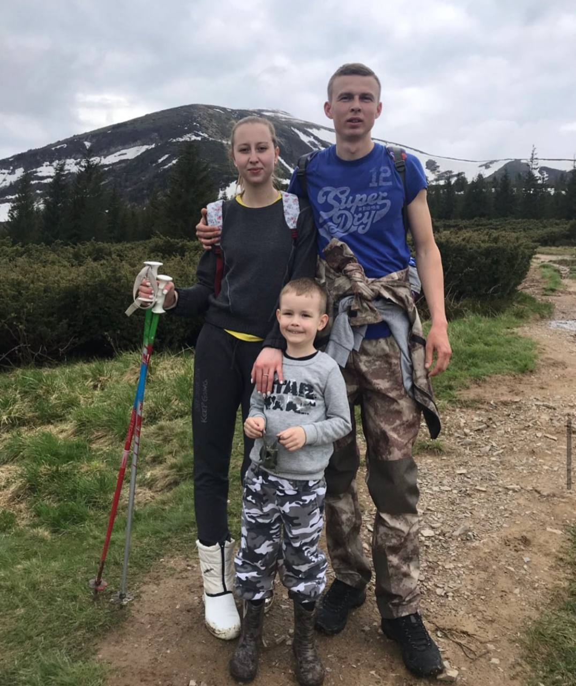 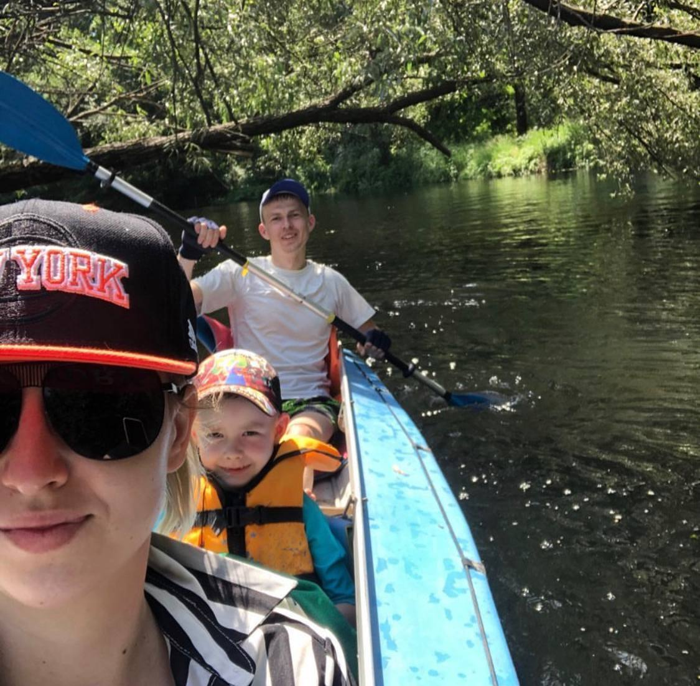